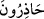
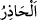

56. “Biz ise, elbette uyanık (ve yekvücut) bir cemaatız.” (diyor ve dedirtiyordu).
Topluluk için “__WORD__ kelimeleri kullanılır. “__WORD__ korku ve endişe duyulan
şeylerden sakınmak, hazırlıklı olmaktır. Fir’avn, şunu kasdediyordu: İsrâiloğulları
sayıca az ve değersiz oldukları için onlara önem verilmez, üstün ve galip gelmeleri de
beklenmez. Fakat biz âdeti teyakkuz, uyanıklık ve her hususta tedbirli olmak olan bir
topluluk ve kavim olduğumuz halde onlar bizi öfkelendiren ve göğsümüzü daraltan işler
yapıyorlar. Birisi bize başkaldırırsa, onun çıkardığı fesad ateşini söndürmekte acele
ederiz.
Fir’avn, İsrâiloğulları’ndan korktuğunu zannetmesinler diye bu sözleri şehirlerin
halkına söylemiştir.
Bazıları ise: “__WORD__ silâh kullanmayı, savaş düzeni almayı ve savaş yöntemini bilen
bir topluluğuz, demektir” demiştir. Bu söz, Musa (a.s.) kavminin silâh teçhizatına sahip
olmadıkları ve savaş sanatını bilmediklerinden kinayedir. Çünkü “__WORD__ hazır anlamına
da gelir. Nitekim es-Sıhâh’ta böyle geçmektedir.
57. Ama (sonunda) biz onları (Fir’avn ve kavmini), bahçelerden, pınarlardan,
çıkardık.
“Ama (sonunda) biz onları” Fir’avn ve kavmini, bu sebepten dolayı içlerinde çıkma
arzusu yaratmak sûretiyle Nil’in iki tarafında uzanan “bahçelerden,” bostanlardan
“pınarlardan, çıkardık.” Bu arzu onları çıkmaya sevk etti. Yâni onlar her ne kadar
kendi iradeleriyle çıkmış olsalar da mezkûr yaratma bakımından çıkarma mecâzî olarak
Allah Teâlâ’ya isnâd edildi.
Râğıb der ki: “İnsanın gözünde de su olduğu için su kaynağı da ona benzetilerek ona
da “__WORD__ denir.”
Keşfü’l-esrâr’da: “__WORD__ yani akan nehirlerden, demektir.” der. Kâşifî ise “pınar
başlarından” der.
58. Hazinelerden ve değerli yerlerden.
“Hazinelerden” Altın, gümüş ve benzeri görünen mallardan çıkardık/ayırdık. Allah
Teâlâ bunları “__WORD__ (hazîne/biriktirip saklama)” diye isimlendirdi. Çünkü Allah’ın hakkı